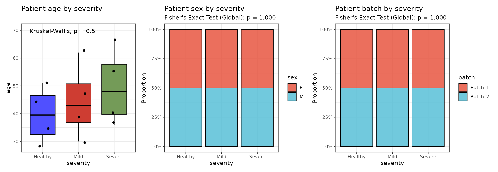
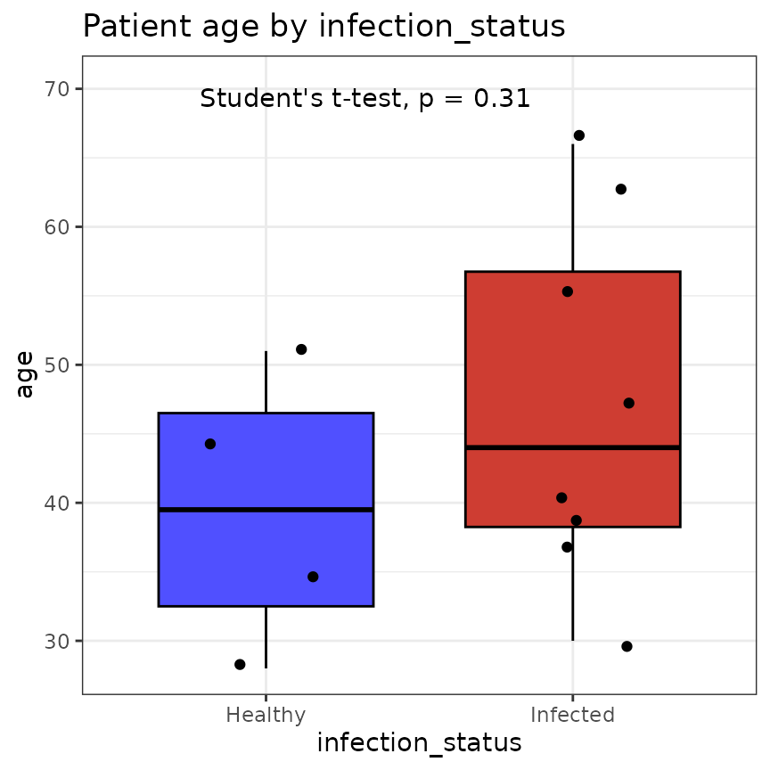
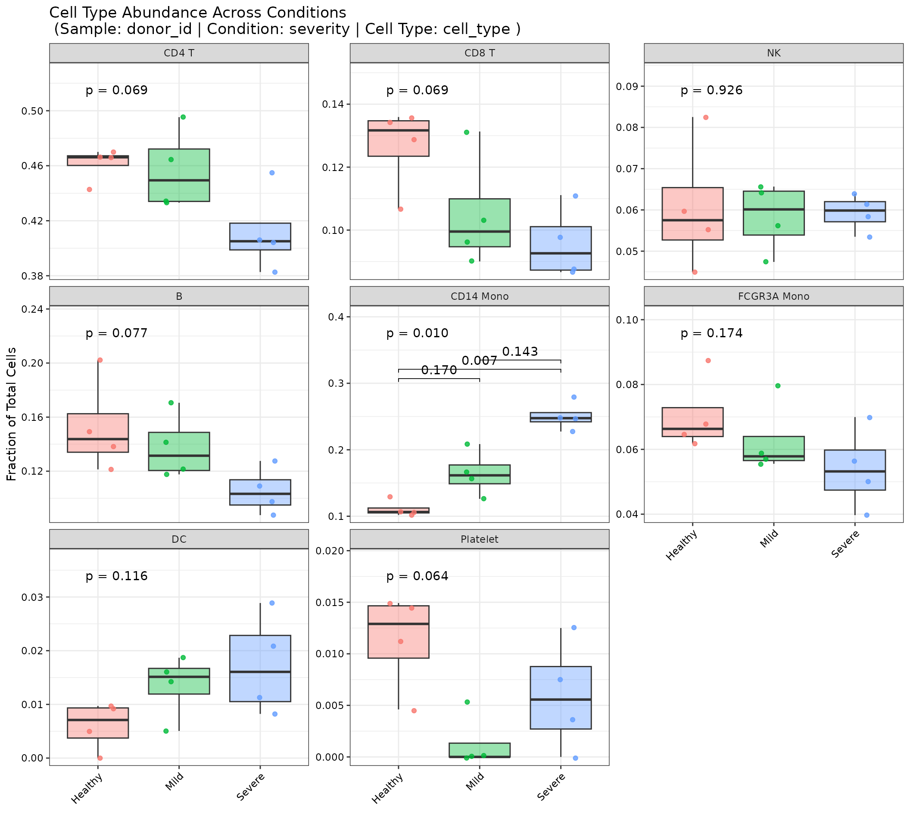
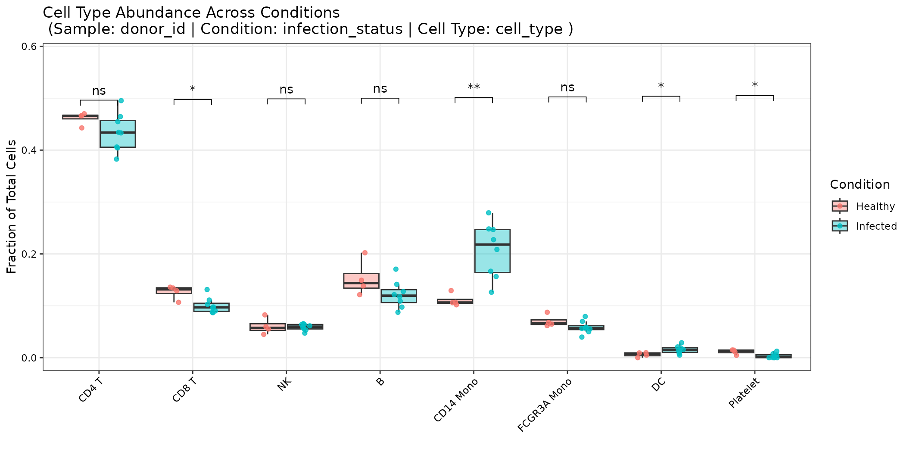
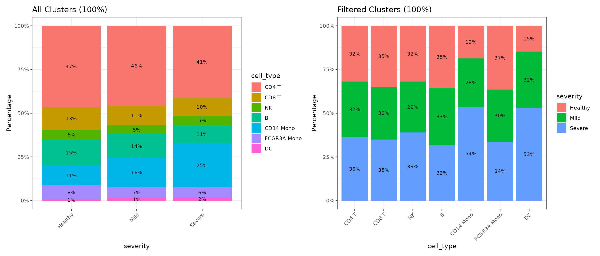
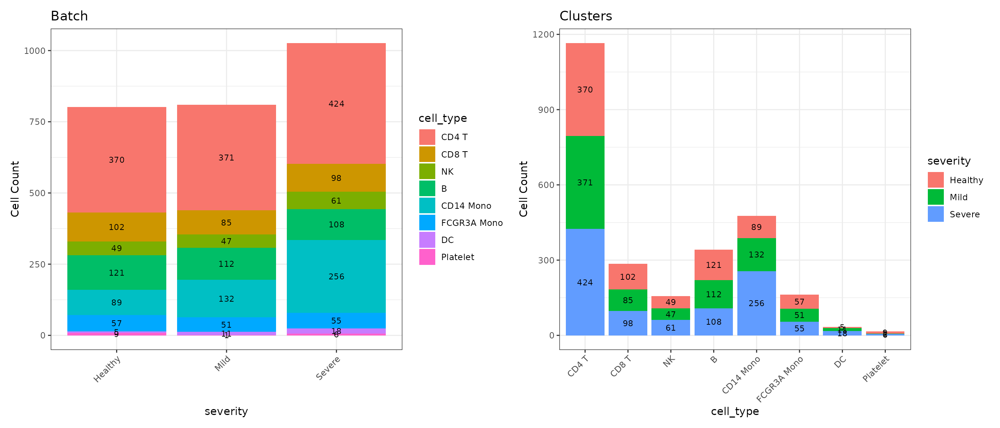
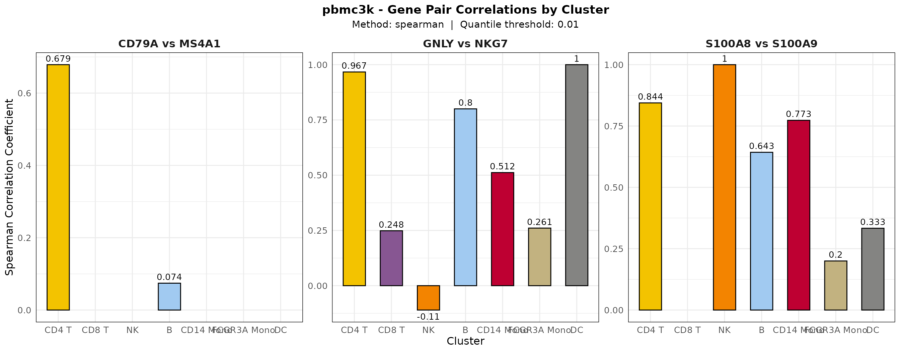

Statistical Analysis: Abundance, Confounders, and Correlations
Chomchon Uansiri
2026-10-10
Source:vignettes/OHMmy-statistical-analysis.Rmd
OHMmy-statistical-analysis.RmdOverview
Cohort-level questions, such as whether a population expands in disease, must be tested with the donor as the unit of replication, not the cell. Treating thousands of cells from a few donors as independent observations (pseudoreplication) produces very small p-values with no biological meaning. The OHMmy statistics functions aggregate to the donor level before testing:
| Function | Purpose |
|---|---|
plot_metadata_stats() |
Check that donor-level covariates (age, sex, batch, …) are balanced across conditions |
plot_cell_abundance() |
Test per-donor cell-type proportions across conditions, with automatic test selection and brackets |
plot_cluster_distributions() |
Stacked bar charts of counts and proportions for any two metadata columns |
plot_gene_pair_correlations() |
Per-cluster correlation between gene pairs |
library(Seurat)
library(OHMmy)
library(patchwork)
source("ohmmy-vignette-helpers.R")
pbmc <- load_pbmc3k_ohmmy() # built in "Data Processing, Integration, and Clustering"
out_dir <- file.path(tempdir(), "OHMmy-statistics")
dir.create(out_dir, recursive = TRUE, showWarnings = FALSE)The simulated cohort
The pbmc3k cells are spread across 12 simulated donors in three
severity groups. By construction, monocyte-like cells were over-assigned
to Mild and Severe donors (see add_mock_cohort() in
ohmmy-vignette-helpers.R), so a correct analysis should
find more CD14 monocytes with increasing severity and
no other systematic difference.
donors <- unique(pbmc@meta.data[, c("donor_id", "severity", "infection_status", "batch", "age", "sex")])
rownames(donors) <- NULL
donors[order(donors$donor_id), ]
#> donor_id severity infection_status batch age sex
#> 4 D01 Healthy Healthy Batch_1 34 F
#> 2 D02 Healthy Healthy Batch_2 51 M
#> 1 D03 Healthy Healthy Batch_1 28 M
#> 6 D04 Healthy Healthy Batch_2 45 F
#> 7 D05 Mild Infected Batch_1 39 F
#> 8 D06 Mild Infected Batch_2 62 M
#> 11 D07 Mild Infected Batch_1 47 F
#> 5 D08 Mild Infected Batch_2 30 M
#> 10 D09 Severe Infected Batch_1 55 M
#> 3 D10 Severe Infected Batch_2 41 F
#> 9 D11 Severe Infected Batch_1 66 M
#> 12 D12 Severe Infected Batch_2 36 F1. Confounder checks with plot_metadata_stats()
Before comparing conditions, confirm that the groups do not differ in
covariates that could explain the result.
plot_metadata_stats() reduces the metadata to one row per
sample_col, detects whether each variable is continuous or
categorical, and chooses the test:
-
continuous, 2 groups: Mann-Whitney U
(
"mann_whitney") or t-test ("t_test") -
continuous, 3 or more groups: Kruskal-Wallis
(
"kruskal.test") or ANOVA ("anova"), followed by Dunn’s or Tukey post-hoc tests. Withstrict_posthoc = TRUE, the post-hoc tests run only when the global test is significant. -
categorical: Chi-square (
"chisq") or Fisher’s exact test ("fisher", recommended for small cohorts)
meta_res <- plot_metadata_stats(
seurat_obj = pbmc,
sample_col = "donor_id",
condition_col = "severity",
metadata_vars = c("age", "sex", "batch"),
continuous_test_n3 = "kruskal.test",
categorical_test = "fisher",
output_dir = file.path(out_dir, "metadata"),
dpi = 100
)
wrap_plots(meta_res$plots, nrow = 1)
Every result is also returned as a table:
meta_res$stats$age$Global
#> # A tibble: 1 × 6
#> .y. n statistic df p method
#> * <chr> <int> <dbl> <int> <dbl> <chr>
#> 1 age 12 1.38 2 0.500 Kruskal-Wallis
meta_res$stats$sex$Global
#> Facet Method p
#> 1 All fisher 1
meta_res$stats$batch$Global
#> Facet Method p
#> 1 All fisher 1None of the covariates differ between severity groups, so they are unlikely to confound the abundance analysis below. The same function handles two-group designs. Here age is compared between healthy and infected donors with a t-test:
meta_2grp <- plot_metadata_stats(
seurat_obj = pbmc,
sample_col = "donor_id",
condition_col = "infection_status",
metadata_vars = "age",
continuous_test_n2 = "t_test",
output_dir = file.path(out_dir, "metadata"),
dpi = 100
)
meta_2grp$stats$age$Global
#> # A tibble: 1 × 9
#> .y. group1 group2 n1 n2 statistic df p p.signif
#> <chr> <chr> <chr> <int> <int> <dbl> <dbl> <dbl> <chr>
#> 1 age Healthy Infected 4 8 -1.08 7.47 0.312 ns
meta_2grp$plots$age
2. Differential abundance with
plot_cell_abundance()
plot_cell_abundance() computes, for every donor, the
fraction of its cells in each cell type. Missing combinations are filled
with zero. It then tests each cell type across conditions:
-
3 or more conditions: a global Kruskal-Wallis test
(or ANOVA) per cell type, then Dunn’s (or Tukey’s) pairwise tests with
p_adjustcorrection. Withstrict_posthoc = TRUE, only cell types with a significant global test get pairwise brackets. -
2 conditions: Mann-Whitney
(
"mann_whitney"), paired Wilcoxon ("wilcoxon_paired") or t-test ("t_test").
Brackets are positioned per facet so they never overlap the data.
Three severity groups
p_abund <- plot_cell_abundance(
seurat_obj = pbmc,
sample_col = "donor_id",
condition_col = "severity",
celltype_col = "cell_type",
global_test = "kruskal.test",
strict_posthoc = TRUE,
p_adjust = "BH",
facet_by_cluster = TRUE,
pairwise_label = "p.adj",
y_expand = 0.35,
output_dir = file.path(out_dir, "abundance")
)
p_abund
As designed, only CD14 Mono passes the global test
(Kruskal-Wallis p ≈ 0.01). Because of
strict_posthoc = TRUE, it is also the only panel with
pairwise Dunn brackets, and Severe vs Healthy is the significant
contrast. The weaker downward trends in CD4 T, CD8 T and B cells are not
an independent effect. Proportions are compositional, so when monocytes
take a larger share of each Severe donor’s cells, every other
population’s share has to shrink.
Two conditions, all cell types on one axis
With facet_by_cluster = FALSE, all cell types share one
panel, with dodged boxes per condition:
p_abund2 <- plot_cell_abundance(
seurat_obj = pbmc,
sample_col = "donor_id",
condition_col = "infection_status",
celltype_col = "cell_type",
pairwise_test = "mann_whitney",
facet_by_cluster = FALSE,
pairwise_label = "p.signif",
output_dir = file.path(out_dir, "abundance")
)
p_abund2
3. Composition overview with
plot_cluster_distributions()
For a quick descriptive view,
plot_cluster_distributions() cross-tabulates any two
metadata columns and saves two figures. The first shows proportions in
both directions (cell types within each group, and groups within each
cell type). The second shows absolute counts.
dist_plots <- plot_cluster_distributions(
seurat_obj = pbmc,
cluster_col = "cell_type",
batch_col = "severity",
output_dir = file.path(out_dir, "distributions"),
file_prefix = "pbmc3k"
)
dist_plots$proportions
dist_plots$counts
4. Gene-pair correlations with
plot_gene_pair_correlations()
Blend plots show co-expression visually.
plot_gene_pair_correlations() puts a number on it: for each
pair and each cluster, it computes the Pearson, Spearman or Kendall
correlation. Before that, it drops cells that do not express both genes
above the quantile_thresh quantile, which reduces the
effect of dropout zeros.
cor_res <- plot_gene_pair_correlations(
seurat_obj = pbmc,
cluster_col = "cell_type",
gene_pairs = list(c("GNLY", "NKG7"), c("CD79A", "MS4A1"), c("S100A8", "S100A9")),
sample_name = "pbmc3k",
cor_method = "spearman",
quantile_thresh = 0.01,
fill_palette = "kelly",
output_dir = file.path(out_dir, "gene_pairs"),
dpi = 100,
verbose = FALSE
)
cor_res$plot
The underlying table also reports how many cells entered each correlation, so estimates based on only a few cells can be identified:
head(cor_res$data[order(-cor_res$data$N_Cells), ], 10)
#> # A tibble: 10 × 4
#> Cluster Correlation N_Cells Pair
#> <fct> <dbl> <int> <chr>
#> 1 CD14 Mono 0.773 462 S100A8 vs S100A9
#> 2 B 0.0743 275 CD79A vs MS4A1
#> 3 NK -0.236 149 GNLY vs NKG7
#> 4 CD8 T 0.305 87 GNLY vs NKG7
#> 5 FCGR3A Mono 0.222 79 S100A8 vs S100A9
#> 6 CD4 T 0.844 21 S100A8 vs S100A9
#> 7 CD4 T 0.961 17 GNLY vs NKG7
#> 8 CD14 Mono 0.512 16 GNLY vs NKG7
#> 9 DC 0.333 10 S100A8 vs S100A9
#> 10 FCGR3A Mono -0.119 8 GNLY vs NKG7Session information
sessionInfo()
#> R version 4.6.1 (2026-06-24)
#> Platform: x86_64-pc-linux-gnu
#> Running under: Ubuntu 22.04.5 LTS
#>
#> Matrix products: default
#> BLAS: /usr/lib/x86_64-linux-gnu/openblas-pthread/libblas.so.3
#> LAPACK: /usr/lib/x86_64-linux-gnu/openblas-pthread/libopenblasp-r0.3.20.so; LAPACK version 3.10.0
#>
#> locale:
#> [1] LC_CTYPE=C.UTF-8 LC_NUMERIC=C LC_TIME=C.UTF-8
#> [4] LC_COLLATE=C.UTF-8 LC_MONETARY=C.UTF-8 LC_MESSAGES=C.UTF-8
#> [7] LC_PAPER=C.UTF-8 LC_NAME=C LC_ADDRESS=C
#> [10] LC_TELEPHONE=C LC_MEASUREMENT=C.UTF-8 LC_IDENTIFICATION=C
#>
#> time zone: UTC
#> tzcode source: system (glibc)
#>
#> attached base packages:
#> [1] stats graphics grDevices utils datasets methods base
#>
#> other attached packages:
#> [1] patchwork_1.3.2 OHMmy_1.0.2.9000 Seurat_5.6.0 SeuratObject_5.4.0
#> [5] sp_2.2-3
#>
#> loaded via a namespace (and not attached):
#> [1] RColorBrewer_1.1-3 jsonlite_2.0.0 magrittr_2.0.5
#> [4] spatstat.utils_3.2-5 farver_2.1.2 rmarkdown_2.32
#> [7] fs_2.1.0 ragg_1.5.2 vctrs_0.7.3
#> [10] ROCR_1.0-12 memoise_2.0.1 spatstat.explore_3.8-3
#> [13] rstatix_1.1.0 htmltools_0.5.9 broom_1.0.13
#> [16] Formula_1.2-6 sass_0.4.10 sctransform_0.4.3
#> [19] parallelly_1.48.0 KernSmooth_2.23-26 bslib_0.12.0
#> [22] htmlwidgets_1.6.4 desc_1.4.3 ica_1.0-3
#> [25] plyr_1.8.9 plotly_4.12.1 zoo_1.9-1
#> [28] cachem_1.1.0 igraph_2.3.4 mime_0.13
#> [31] lifecycle_1.0.5 pkgconfig_2.0.3 Matrix_1.7-5
#> [34] R6_2.6.1 fastmap_1.2.0 fitdistrplus_1.2-6
#> [37] future_1.76.0 shiny_1.14.0 digest_0.6.39
#> [40] tensor_1.5.1 RSpectra_0.16-2 irlba_2.4.1
#> [43] textshaping_1.0.5 ggpubr_1.0.0 labeling_0.4.3
#> [46] progressr_1.0.0 spatstat.sparse_3.2-0 httr_1.4.9
#> [49] polyclip_1.10-7 abind_1.4-8 compiler_4.6.1
#> [52] withr_3.0.3 S7_0.2.2 backports_1.5.1
#> [55] viridis_0.6.5 carData_3.0-6 fastDummies_1.7.6
#> [58] ggforce_0.5.0 ggsignif_0.6.4 MASS_7.3-65
#> [61] ggsci_5.2.0 tools_4.6.1 lmtest_0.9-40
#> [64] otel_0.2.0 httpuv_1.6.17 future.apply_1.20.2
#> [67] goftest_1.2-3 glue_1.8.1 nlme_3.1-169
#> [70] promises_1.5.0 grid_4.6.1 Rtsne_0.17
#> [73] cluster_2.1.8.2 reshape2_1.4.5 generics_0.1.4
#> [76] gtable_0.3.6 spatstat.data_3.1-9 tidyr_1.3.2
#> [79] data.table_1.18.6.1 utf8_1.2.6 tidygraph_1.3.1
#> [82] car_3.1-5 spatstat.geom_3.8-3 RcppAnnoy_0.0.23
#> [85] ggrepel_0.9.8 RANN_2.6.3 pillar_1.11.1
#> [88] stringr_1.6.0 spam_2.11-4 RcppHNSW_0.7.0
#> [91] later_1.4.8 splines_4.6.1 tweenr_2.0.3
#> [94] dplyr_1.2.1 lattice_0.22-9 survival_3.8-6
#> [97] deldir_2.0-4 tidyselect_1.2.1 miniUI_0.1.2
#> [100] pbapply_1.7-5 knitr_1.52 gridExtra_2.3.1
#> [103] SoupX_1.6.2 scattermore_1.2 xfun_0.61
#> [106] graphlayouts_1.2.5 matrixStats_1.5.0 leidenbase_0.1.37
#> [109] stringi_1.8.9 yaml_2.3.12 evaluate_1.0.5
#> [112] codetools_0.2-20 ggraph_2.2.2 tibble_3.3.1
#> [115] cli_3.6.6 uwot_0.2.5 xtable_1.8-8
#> [118] reticulate_1.47.0 systemfonts_1.3.2 jquerylib_0.1.4
#> [121] Rcpp_1.1.2 globals_0.19.1 spatstat.random_3.5-2
#> [124] png_0.1-9 spatstat.univar_3.2-0 parallel_4.6.1
#> [127] pkgdown_2.2.1 ggplot2_4.0.3 dotCall64_1.2
#> [130] listenv_1.1.0 viridisLite_0.4.3 scales_1.4.0
#> [133] ggridges_0.5.7 purrr_1.2.2 rlang_1.3.0
#> [136] cowplot_1.2.0